Apache NetBeans
Apache NetBeansLatest release
NetBeans Platform Plugin Quick Start
Last reviewed on 2020-12-01
Welcome to Apache NetBeans plugin development!
This tutorial provides a simple and quick introduction to the Apache NetBeans plugin development workflow by walking you through the creation of a new toolbar for any Apache NetBeans Platform application. Once you are done with this tutorial, you will know how to create, build, and install plugins for the Apache NetBeans Platform.
After you finish this tutorial, you can move on to the NetBeans Platform learning trail. The learning trail provides comprehensive tutorials that highlight a wide range of Apache NetBeans APIs for a variety of application types. If you do not need to do a "Hello World" tutorial, you can skip the instructions that follow and jump straight to the learning trail.
The toolbar you create in this tutorial will look as follows:

The concept is that the user enters some text, presses kbd:Enter, and the IDE’s default browser opens and the text in the toolbar is sent to a Google search, with the results available in the open browser.
To create this toolbar, you will use the NetBeans APIs to enhance the Apache NetBeans Platform’s feature set. Specifically, you will create and register an action invoked by a button created by the NetBeans Platform in the toolbar. You will then create a JPanel containing a JLabel and JTextField as GUI components. Finally, you will implement Presenter.Toolbar to return the JPanel so that it displays in the toolbar, instead of the button.
If it would help you, do some background reading before diving into this tutorial. In particular, you might like to read the Modules API Reference document, which explains what modules are and provides some context for this tutorial. Also note that there is an extensive Reference Material section on the NetBeans Platform Learning Trail. Of course you can always go back to those later, or again, whenever you would like to.
The completed tutorial source code is also available as a GitHub repository.
Setting up the Module Project
We begin by creating the source structure common to all NetBeans Platform modules. Read the Modules API Reference for details.
-
Choose (Ctrl+Shift+N). Under Categories, expand Java with Ant, and select NetBeans Modules. Under Projects, select Module:
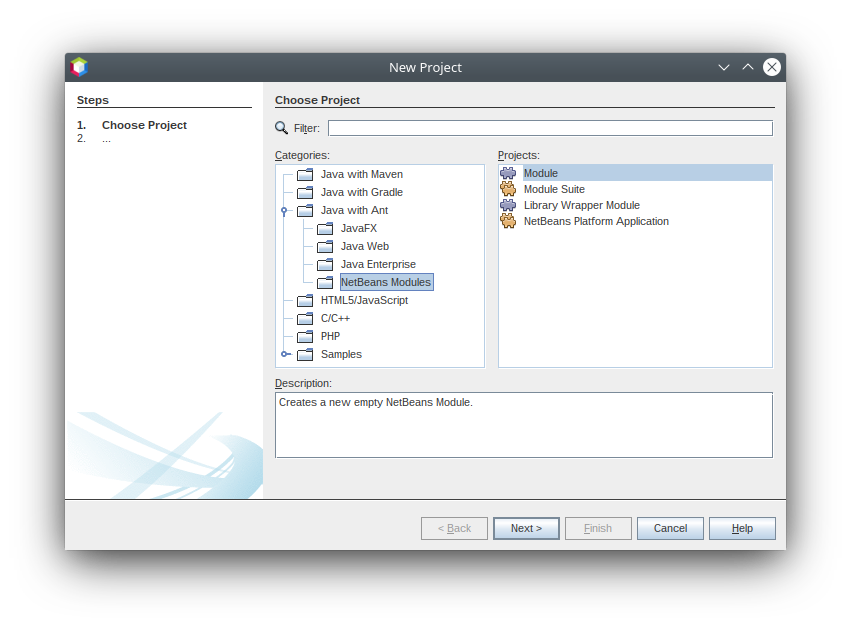
The difference between the 4 templates above is as follows:
-
NetBeans Platform Application. A project that groups a set of module projects and library wrapper module projects that have dependencies on each other, and lets you deploy them together as a unit. Automatically included are a subset of the modules that make up the NetBeans Platform.
-
Module Suite. Same as above, except that the pre-included modules are more than only those relating to the NetBeans Platform — in this case, all the modules that make up NetBeans IDE are included as well.
-
Library Wrapper Module. A project that puts a library JAR file on its classpath and exports some or all of the JAR file’s packages from the module as public packages.
-
Module. A project for implementing the functionality, business logic, and user interface of a module or application built on the NetBeans Platform.
Click Next.
-
In the Name and Location panel:
-
In the Project Name field, type
GoogleToolbar. -
In the Project Location field, change the value to any directory on your computer where the module will be stored.
-
It should look similar to this:
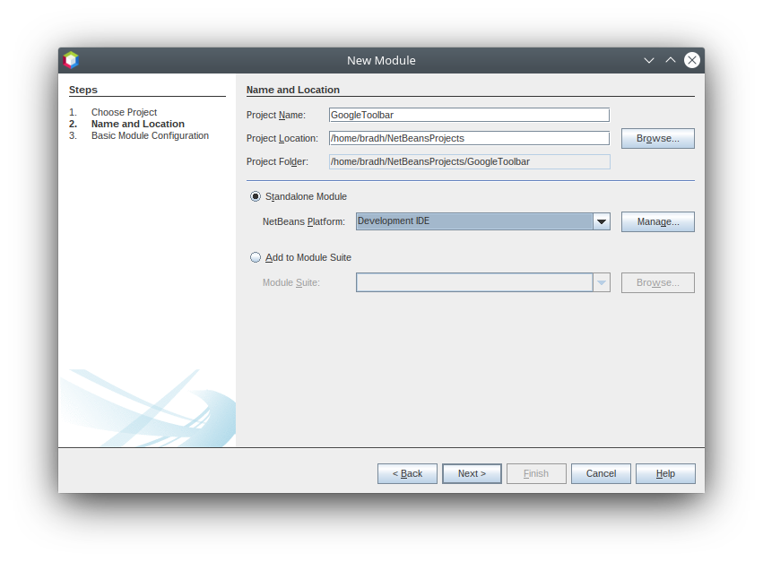
Click Next.
-
In the Basic Module Configuration panel:
-
Type
org.myorg.googletoolbarin "Code Name Base", which defines the unique string identifying the module you are creating. The code name base is also used as the main package of the module, i.e., your main package will be "org.myorg.googletoolbar". -
Do not select the "Generate OSGi Bundle" checkbox, since we will be using the default NetBeans module system, rather than OSGi.
-
It should look similar to this:
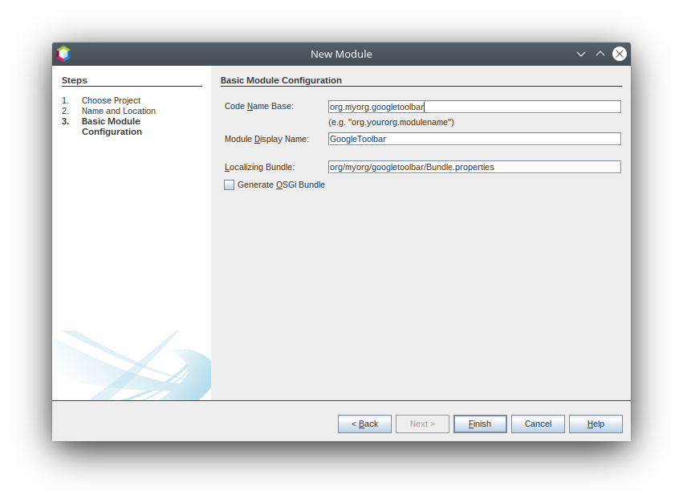
Click Finish.
The IDE creates the GoogleToolbar project:
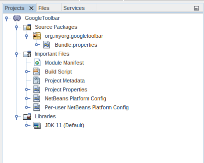
A "project" is a NetBeans IDE compilation/deployment unit. It contains a Build Script, as shown above, which on disk is named "build.xml" file. This is an Ant script for compiling and running the project. The project contains all of your sources. The project opens in the IDE. You can view its logical structure in the Projects window (Ctrl+1) and its file structure in the Files window (Ctrl+2).
If you expand the Important Files node, you can open the Module Manifest, shown above, which has this content:
Manifest-Version: 1.0
AutoUpdate-Show-In-Client: true
OpenIDE-Module: org.myorg.googletoolbar
OpenIDE-Module-Localizing-Bundle: org/myorg/googletoolbar/Bundle.properties
OpenIDE-Module-Specification-Version: 1.0For details on these NetBeans-specific manifest keys, check the NetBeans Modules API Javadoc description.
Coding the Module
In order to create a Google toolbar, we will need to complete the following steps:
Creating the Action
In this section, you use the New Action wizard in NetBeans IDE to create a new Action. An Action is a piece of code invoked by the user to do something in the application. An Action can be invoked from a menu item, toolbar button, and keyboard shortcut in the application.
| As you will see, the New Action wizard creates a Java class with annotations. At compile-time, the annotations are converted into XML elements in a file contributed to the virtual filesystem of the application, which is how an Action is registered in the application. For more information relating to the creation and registration of Actions in the NetBeans Platform, see Actions: How to add things to Files, Folders, Menus, Toolbars and more in the NetBeans Platform Wiki. |
-
Right-click the GoogleToolbar project node and choose New > Action:
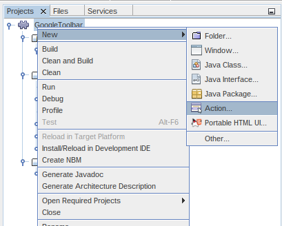
If Action is not displayed, access it by choosing Other, then in the New File wizard under Categories, select Module Development and then Action.
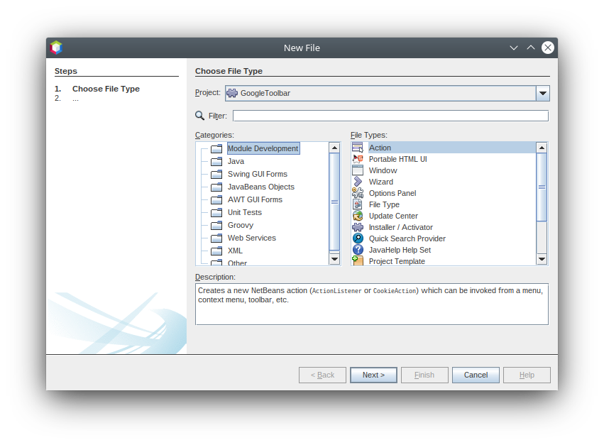
Click Next.
-
In the Action Type panel:
-
Keep the default setting, which will let the Action be unconditionally enabled, as shown below.
-
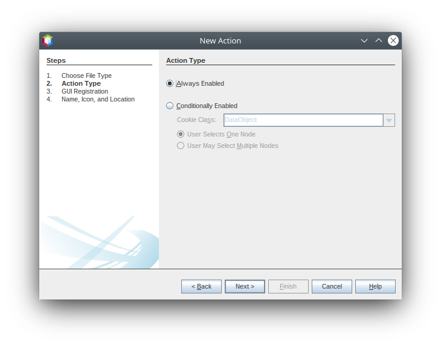
Click Next.
-
In the GUI Registration panel:
-
Select File from the Category drop-down list. The Category drop-down list controls where an action is shown in the Keyboard Shortcuts editor in the IDE.
-
Deselect Global Menu Item because we will not need a menu item.
-
Select Global Toolbar Button. In the Toolbar drop-down list, select File, then in the Position drop-down list, select the toolbar button’s position within the toolbar as "Save All - HERE" as shown below.
-
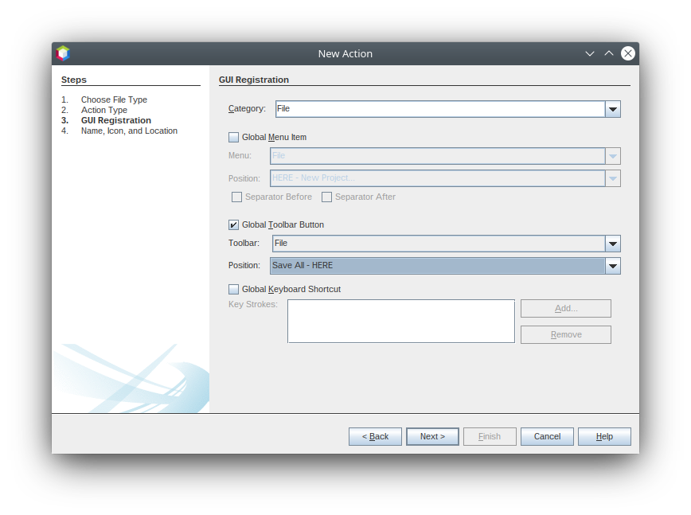
Click Next.
1. In the Name, Icon, and Location panel:
-
In the Class Name field, type
GoogleActionListener -
In the Display Name field, type
Google -
In the Icon field, browse to an icon that has a dimension of 16x16 pixels.
If needed, here are two icons you can use:
-
16x16:
-
24x24:

However, note that by the end of this tutorial you will not use the icon at all once you have created the toolbar. Instead, you will display the JPanel that you create in the next section.
The Name, Icon, and Location panel of the New Action wizard should now look like this:
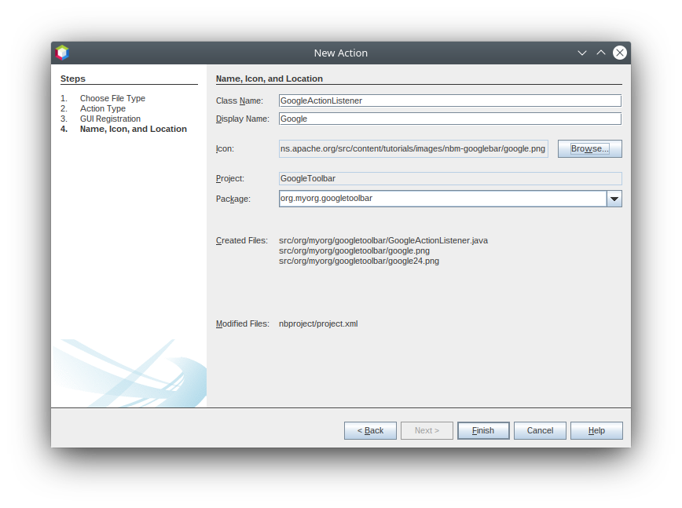
-
Click Finish. The module source structure is now as follows:
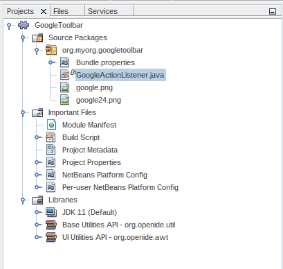
Additional dependencies have been included in the Libraries section, and additional sources have been added.
GoogleActionListener.java , which you should see in the Projects window, has this content:
package org.myorg.googletoolbar;
import java.awt.event.ActionEvent;
import java.awt.event.ActionListener;
import org.openide.awt.ActionID;
import org.openide.awt.ActionReference;
import org.openide.awt.ActionRegistration;
import org.openide.util.NbBundle.Messages;
@ActionID(
category = "File",
id = "org.myorg.googletoolbar.GoogleActionListener"
)
@ActionRegistration(
iconBase = "org/myorg/googletoolbar/google.png",
displayName = "#CTL_GoogleActionListener"
)
@ActionReference(path = "Toolbars/File", position = 500)
@Messages("CTL_GoogleActionListener=Google")
public final class GoogleActionListener implements ActionListener {
@Override
public void actionPerformed(ActionEvent e) {
// TODO implement action body
}
}| When you build the module, which is done automatically in the next step when you run the module, the class annotations that you see above will be converted to XML tags in a file that will be contributed to the virtual filesystem of the application. The XML file will be named "generated-layer.xml" and will be found in the "build\classes\META-INF" folder of your module, which you can see if the Files window (Ctrl-2) is open in the IDE. This file is created at compile-time and contains XML entries generated from the NetBeans annotations that you have defined in your Java classes. Together with the "layer.xml" file that your module can optionally provide, the "generated-layer.xml" file defines the contributions that the module makes to the virtual filesystem. Read about the virtual filesystem here, in the NetBeans Platform Wiki. Also see this article for more information on the @Messages annotation. |
-
In the Projects window, right-click the
GoogleToolbarproject node and choose Run. The module is built and installed in a new instance of the IDE (which is currently set to be the target platform). By default, the default target platform is the version of the IDE you are currently working in. The target platform opens so that you can try out the new module. You should be able to see your button and click it:
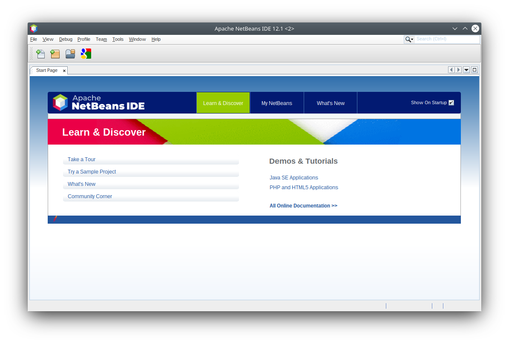
Close the target platform instance:
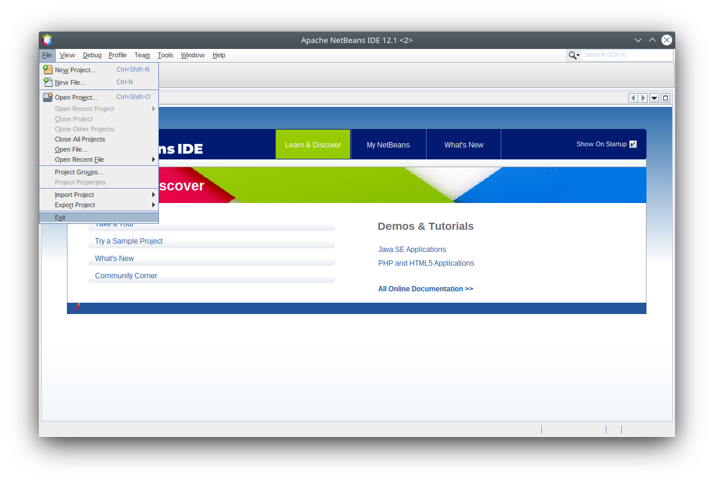
Creating the Toolbar
In this section, we will create a JPanel that will replace the JButton that the Action wizard created in the previous section.
-
Right-click the project node and choose New > Other.
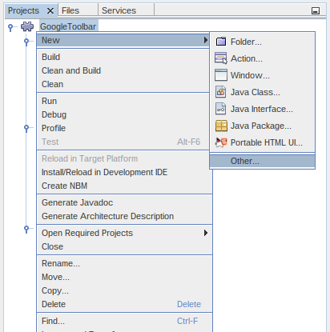
Under Categories, select Swing GUI Forms. Under File Types, select JPanel Form:
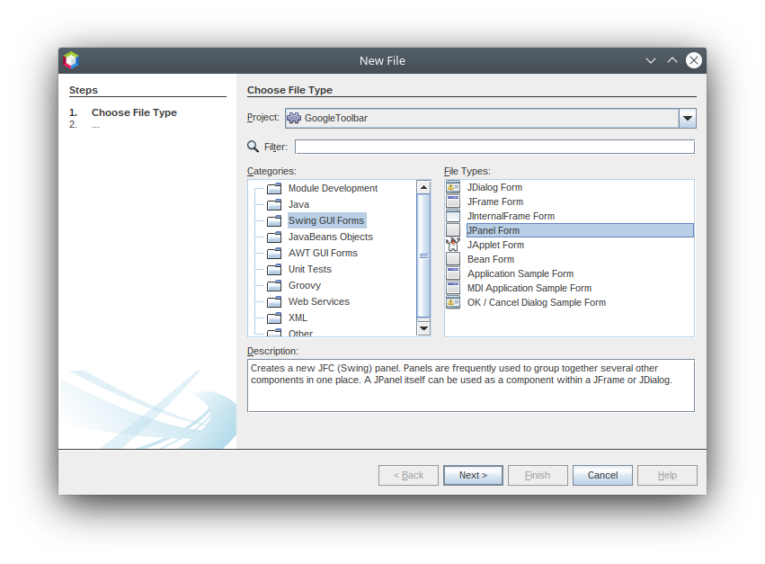
Click Next.
-
In the Name and Location panel, type
GooglePanelas the Class Name and select the package from the drop-down list:
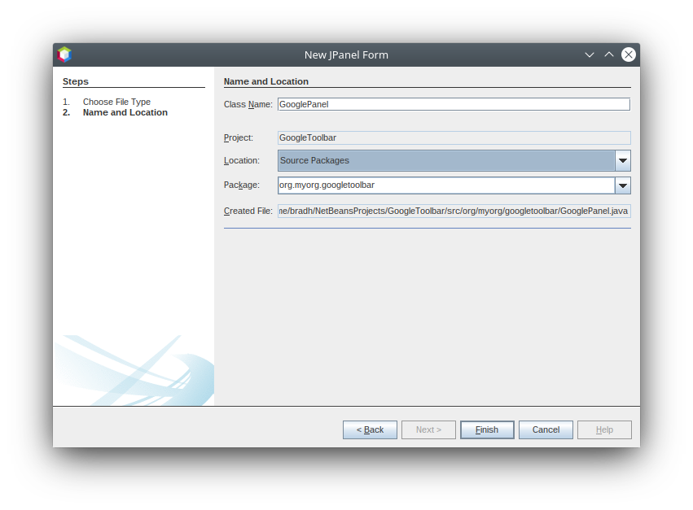
Click Finish.
GooglePanel.java is added to the package and is opened in the Design view in the Source Editor.
-
Place the cursor at the bottom right-hand corner of the JPanel, then select the JPanel and drag the cursor to resize it, so that its width and length resemble that of a toolbar, as shown below:
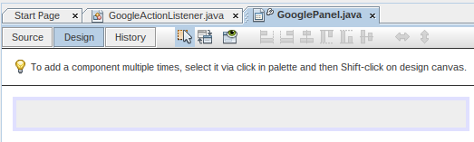
-
Drag a Label (
JLabel) item and a Text Field (JTextField) item from the Palette (Ctrl+Shift+8) directly into theJPanel, then resize theJPaneland the other two items so that they fit snugly together. Finally, press F2 on theJLabeland change its text toGoogle:, then delete the default text in theJTextField.
If you click F2 over the JLabel and the JTextField , their display text will become editable. You can also do this using the properties dialog.
Your JPanel should now resemble the image shown below:
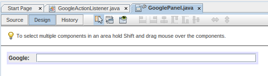
You can set other UI properties as required.
-
Double-click on the JTextField (or right-click on it and choose Events > Action > actionPerformed). This generates a
jTextField1ActionPerformed()method in theGooglePanel.javasource code, which displays in the Source Editor. Fill out thejTextField1ActionPerformedmethod as follows (inserted text shown in bold):
private void jTextField1ActionPerformed(java.awt.event.ActionEvent evt) {
try {
String searchText = URLEncoder.encode(jTextField1.getText(), "UTF-8");
URLDisplayer.getDefault().showURL(new URL("https://www.google.com/search?q=" + searchText));
} catch (UnsupportedEncodingException | MalformedURLException eee) {
//nothing much to do
}
}If you need to, right-click in the Source Editor and choose Format (Alt+Shift+F).
-
Right-click in the Source Editor and choose Fix Imports (Ctrl+Shift+I). The Fix All Imports dialog displays, listing suggested paths for unrecognized classes:
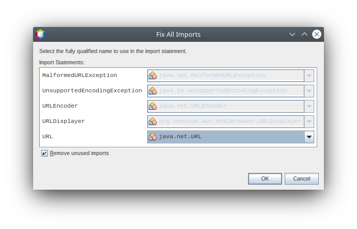
Click OK.
The IDE creates the following import statements at the top of the class:
import java.io.UnsupportedEncodingException;
import java.net.MalformedURLException;
import java.net.URL;
import java.net.URLEncoder;
import org.openide.awt.HtmlBrowser.URLDisplayer;Also notice that all errors disappear from the Source Editor.
1.
Because the JPanel you have created is the component that will be rendered in the toolbar, you need to implement Presenter.Toolbar in the ActionListener you created earlier, in order to display the JPanel in the toolbar.
Change the signature of Open GoogleActionListener.java . so that Presenter.Toolbar is implemented. When using Presenter.Toolbar , you need to extend AbstractAction , instead of implementing ActionListener . Also, you can delete the "iconBase" attribute (as well as the icons from the source tree) because you no longer need an icon in this scenario.
The result of these changes is as follows:
package org.myorg.googletoolbar;
import java.awt.Component;
import java.awt.event.ActionEvent;
import javax.swing.AbstractAction;
import org.openide.awt.ActionID;
import org.openide.awt.ActionReference;
import org.openide.awt.ActionRegistration;
import org.openide.util.NbBundle.Messages;
import org.openide.util.actions.Presenter;
@ActionID(
category = "File",
id = "org.myorg.googletoolbar.GoogleActionListener"
)
@ActionRegistration(
lazy = false,
displayName = "NOT-USED"
)
@ActionReference(path = "Toolbars/File", position = 500)
@Messages("CTL_GoogleActionListener=Google")
public final class GoogleActionListener extends AbstractAction implements Presenter.Toolbar {
@Override
public void actionPerformed(ActionEvent e) {
// delegated to toolbar
}
@Override
public Component getToolbarPresenter() {
return new GooglePanel();
}
}Presenter.Toolbar is provided in the Utilities library, which we need to add.
-
Click near to the relevant
importstatement, and select Search Module Dependency for org.openide.util.actions.Presenter:
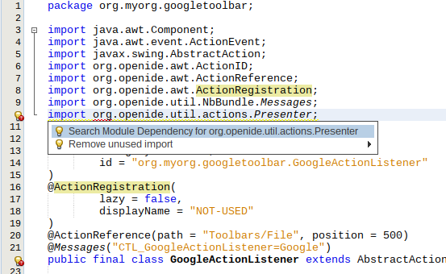
The matching dependency is shown:
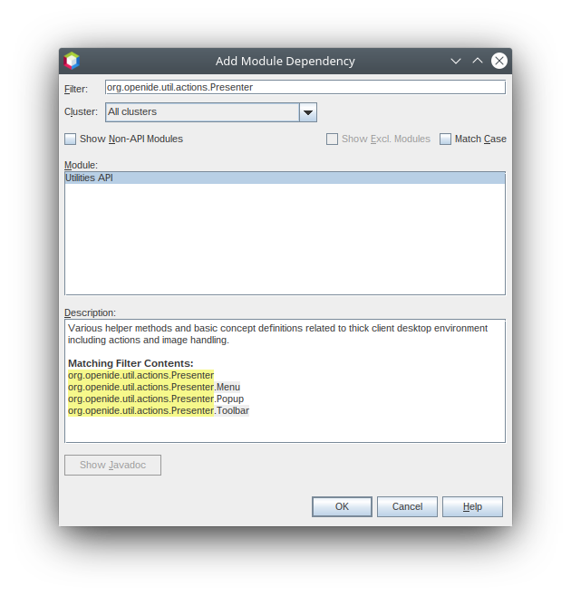
Click menu:[OK] to add the library module, which appears in the Project view.
-
Run the module again. This time, instead of a
JButton, you should see yourJPanel. Type a search string in the text field:
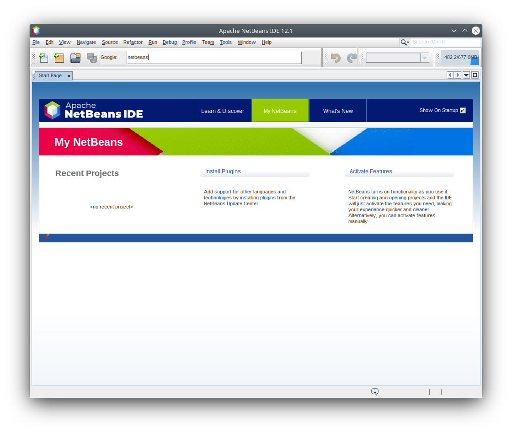
Press Enter. The IDE’s default browser starts up, if you have set one in the Options window. The Google URL and your search string are sent to the browser and a search is performed. When the search results are returned, you can view them in the browser.
In this section, you have created a JPanel that displays a JTextField and a JLabel . You have presented it in the NetBeans toolbar, thanks to the Presenter.Toolbar class. When the user presses Enter in the JTextField , its content is sent to a Google search. The HTML browser opens and you see the result of the Google search. The ActionListener is used to integrate the JPanel within the application’s toolbar, as registered via the annotations in the ActionListener .
See Also
This concludes the NetBeans Plugin Quick Start. This document has described how to create a plugin that adds a Google Search toolbar to the IDE. For more information about creating and developing plugins, see the following resources:
-
NetBeans API classes used in this tutorial: